Armas 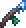 Wand of Frosting 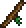 Wand of Sparking Daybloom Staff Armaduras 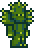 Cactus armor 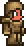 Wooden armor Acessórios 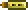 Aglet 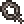 Shackle 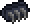 Climbing Claws Consumíveis 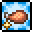 Food buffs 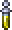 Ironskin Potion 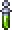 Swiftness Potion 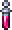 Regeneration Potion 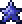 Mana Crystals